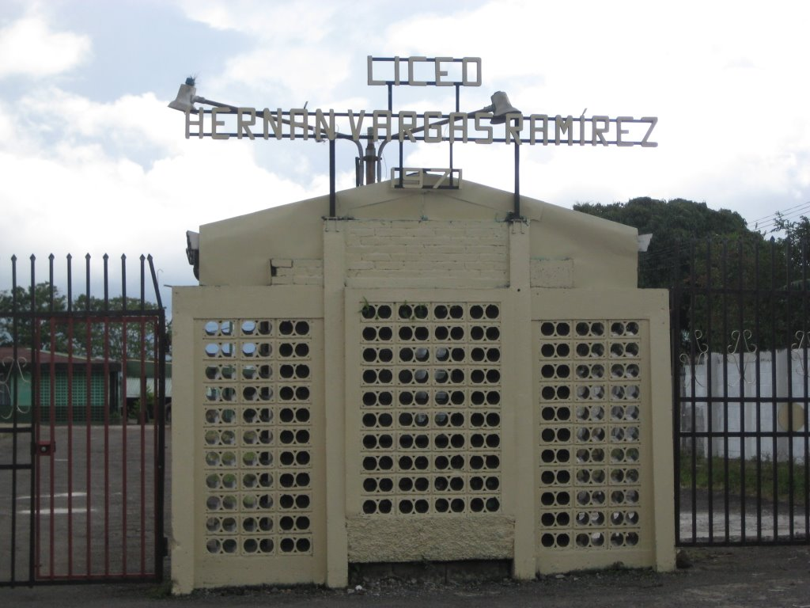

Misión
El Liceo Hernán Vargas Ramírez es una institución de educación secundaria orientada a la formación de ciudadanos competentes dentro de la sociedad con un sentido de compromiso y pertenencia.
Inicio / Nosotros
Conoce nuestra historia, principios y la identidad que nos define como institución.
Un poco de nuestra historia
El Liceo Hernán Vargas Ramírez, conocido originalmente como Liceo de Juan Viñas,
nació gracias al esfuerzo de la comunidad por contar con una institución de educación
secundaria en la zona. Su historia inicia con la creación de un comité pro colegio en
1966 y la aprobación del proyecto en 1969.
La institución comenzó funciones en marzo de 1971 en la Escuela Cecilio Lindo Morales,
como colegio académico nocturno. Su primer director fue el Lic. Luis Bernal Montes de Oca.
En 1973 inició el curso lectivo en sus nuevas instalaciones, ubicadas en el centro de
Juan Viñas.
En el año 2003, el Liceo de Juan Viñas pasó a llamarse Liceo Hernán Vargas Ramírez,
en homenaje a la persona que impulsó el proyecto educativo para la comunidad. Desde
entonces, el liceo se ha consolidado como una institución importante para el desarrollo
educativo de Juan Viñas, el cantón de Jiménez y comunidades cercanas.

El Liceo Hernán Vargas Ramírez es una institución de educación secundaria orientada a la formación de ciudadanos competentes dentro de la sociedad con un sentido de compromiso y pertenencia.
Seremos una institución reconocida con vocación a la excelencia, promoviendo el desarrollo de habilidades y destrezas que permitan a los estudiantes proyectarse positivamente en la sociedad.
Documentos oficiales que orientan la convivencia, los deberes, derechos y disposiciones generales de la institución.
Documento oficial que reúne las normas de convivencia, deberes, derechos, uso de espacios, presentación personal y disposiciones generales del Liceo Hernán Vargas Ramírez.
La normativa institucional permite mantener un ambiente educativo ordenado, respetuoso y seguro para estudiantes, docentes, personal administrativo y familias.
Información general de referencia